P014 · 3.5 （串口）格式化打印字符串¶
格式化打印字符串是什么¶
各位同学大家好，我是铁头山羊。今天我们学习第三章第五节：如何通过串口打印格式化字符串。课程所需材料都在开发套件包里，屏幕上有二维码，可以进入淘宝店铺购买；购买后可以获得课程课件和源码，也可以加入答疑群直接交流。
先看一个标准的 C 语言控制台程序。它提示输入姓名，输入“Tom”后，会根据这个名字打印问候语“Hi, Tom! Nice to meet you!”。编译并运行程序，可以看到它先显示输入提示，输入名字后再输出问候语。这里调用 printf 打印问候语时，就是在使用格式化打印字符串。
本期分成六部分：前三部分整理上节课的代码，包括给工程重命名、整理代码格式、补充注释；第四部分讲串口格式化打印的编程原理；第五部分重写 fputc 函数；第六部分做一个测试工程，用格式化字符串打印单片机当前时间。下面从第一部分开始。
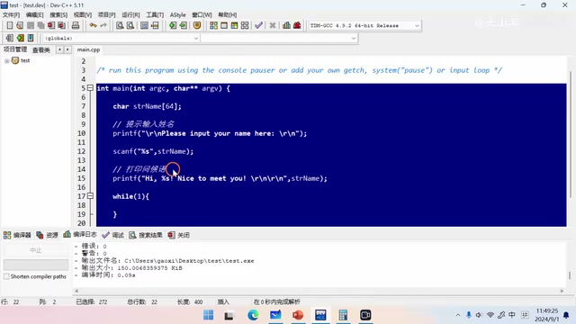
标准 C 控制台程序及其 printf 问候语代码 · 原片 00:36
这个程序先弹出一行字符串，提示输入姓名；例如名字叫 Tom，把名字输入后，它会根据姓名打印问候语。运行结果中先看到输入提示，输入 Tom 后出现“Hi, Tom! Nice to meet you!”。讲解的重点是：这句问候不是逐字手工拼出来，而是由 printf 将字符串中的名字位置替换后再打印。
本节六部分的顺序是：给工程重命名、整理之前的代码、给代码加注释、讲解格式化字符串的编程原理、重写名为 fputc 的函数，最后写测试工程，用格式化字符串打印单片机当前时间。前三项都是先把上节课代码整理工整，再进入新内容。
重命名上节课的工程¶
先拿出上节课的工程。文件夹名和工程名都叫 template，以前写的工程也都叫这个名字，不容易区分，所以最好给每节课的工程单独命名。本期学习格式化打印字符串，可以把文件夹改名为 printf_test，再把工程文件也改成 printf_test。双击打开后，Project 名称也显示为 printf_test，这样工程就改好了。
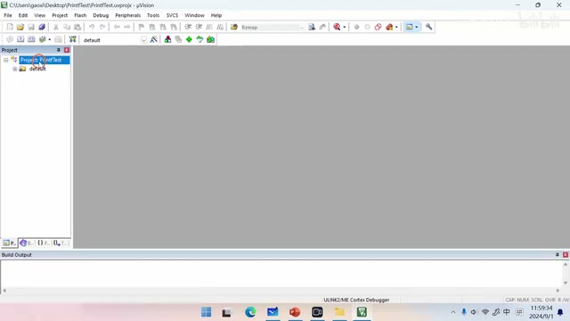
已重命名为 PrintfTest 的工程窗口 · 原片 03:03
具体操作分两步：先在文件管理器中给整个工程文件夹改名；本期用 printf_test 表示测试格式化打印。然后再给工程文件本身改成同一个名字。双击打开工程后，检查 Project 名称已经变为 printf_test，以此确认修改完成。这样以后每节课各有自己的工程名，查找和区分会更直观。
画面里的原工程目录和工程文件都显示为 template，此前的工程也有同样的问题，因此只改其中一项还不够：先改外层文件夹，再把工程文件也改成相同的新名称。完成后打开工程确认名称已经生效。这样后续在多个课程工程之间切换时，不会因为都叫模板而难以辨认。
整理初始化代码¶
接下来整理之前写的代码。代码在左侧导航栏的 user 文件夹里的 main.c。原来的 main 函数很长，主要做三件事：初始化串口 IO 引脚 PB6、PB7；初始化串口；运行一次发送多个字节的 My_USART_SendBytes 测试代码。测试代码之外的部分都在做初始化，可以封装成函数，让代码更清楚。
声明 void My_USART1_Init(void)，从名字可以看出这是自己编写的、用于初始化 USART1 的接口；把它的实现放在文件底部，再把 main 里的 IO 引脚和 USART 模块初始化代码剪切到这个函数里。之后 main 只需调用 My_USART1_Init()，就可以完成串口初始化，函数也不必写得那么长。
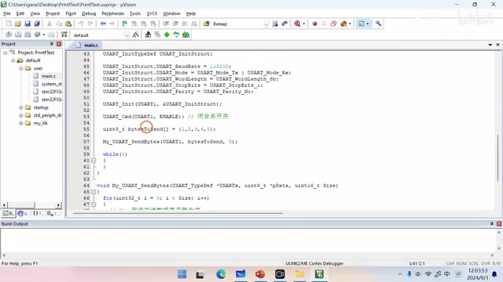
main.c 中串口初始化相关代码 · 原片 03:50
在导航栏展开 user，双击 main.c。原来的初始化代码占了很长一段，查看后可按用途分成引脚初始化、USART 初始化和一次性的 My_USART_SendBytes 测试。把前两段封装、把测试留在 main 中，main 的职责就容易看清。
先声明 void My_USART1_Init(void)，再到文件底部写函数体，补上花括号。将 main 里的 IO 引脚初始化以及 user 模块初始化两部分剪切出来，粘贴到 My_USART1_Init 中。回到 main 后，用一次 My_USART1_Init() 调用替代那段较长的初始化代码；这样仍然完成串口初始化，但 main 看起来清爽得多。
为发送和初始化函数补充注释¶
整理好代码后给它补上注释，这是一个好习惯。先注释 My_USART_SendBytes：它通过串口发送多个字节。参数 USARTx 填串口名称，pData 是要发送的数据，Size 是要发送的数据数量，单位是字节。这样看注释就能明白这个接口的用途和用法。
然后给 My_USART1_Init 写简介，说明它用于初始化 USART1。初始化配置是 PB6 作为 TX、PB7 作为 RX，波特率 115200、8 位数据位、1 位停止位、无校验、双向收发；它没有参数，所以参数部分不必写。这里的波特率按屏幕上的初始化代码为 115200。
初始化代码还可以分成两段：第一段初始化 IO 引脚 PB6 和 PB7，第二段初始化 USART1。分别加上“1. 初始化 PB6 和 PB7”以及“2. 初始化 USART1”的注释后，代码结构就清楚了。本节之前的代码整理到这里完成，下面进入格式化字符串的原理。
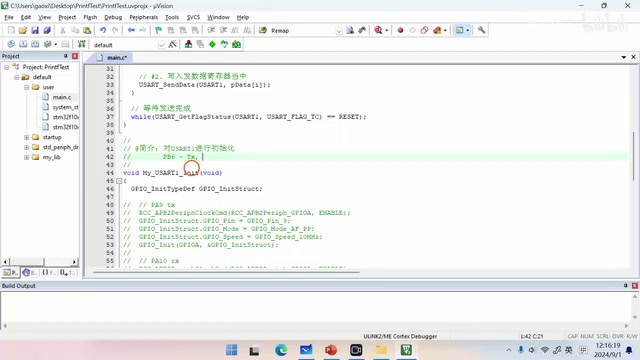
USART1 初始化设置：PB6/PB7 与串口参数 · 原片 07:20
printf 如何把格式化字符串送出去¶
回忆刚才的 C 程序：先声明一个变量存储人名，例如 Tom，然后调用 printf 把问候语格式化打印到控制台。printf 做两件事。第一，生成格式化字符串：把 %s 这个占位符替换成 Tom，得到完整字符串。第二，通过 putchar 把生成的字符串送到控制台。
putchar 每次发送一个字符，所以字符串有多少个字符，就要调用多少次。它有两个参数，这里只看第一个参数 ch，表示要发送的字符；每次传入一个字符，然后将字符发送到控制台。
单片机没有控制台。注意 fputc 前面有 weak 关键字，表示这个函数可以被重写。我们把它重写成通过串口发送字符的形式。重写后再调用 printf，格式化后的字符串就会经由串口发送出去；这就是通过串口打印格式化字符串的基本原理。
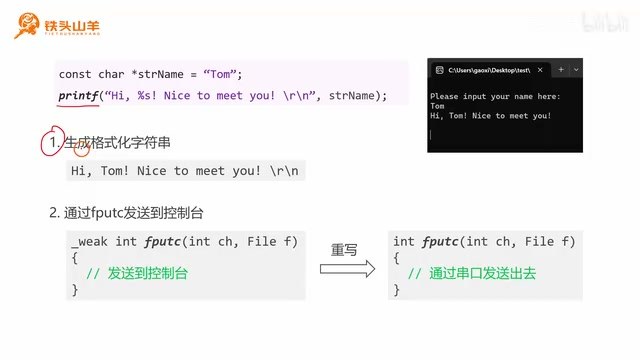
printf 生成格式化字符串后经 fputc 逐字符输出的示意 · 原片 09:10
对于 putchar，每次只发送一个字符，所以要按字符串长度重复调用。函数有两个参数，第二个参数在这里没有用；只看第一个 ch 参数，它表示当前要送出的字符。字符串的每个字符依次传进来，再逐个输出到控制台。
单片机端没有控制台，因此要改变这个字符最后的去向。fputc 声明前的 weak 表明它可以由用户重写。将默认“发送到控制台”的实现改成“通过串口发送出去”，之后 printf 负责生成完整格式化文本，而每个字符由重写后的 fputc 发到串口。这保留了 printf 的格式化能力，同时替换了输出设备。
重写 fputc 的发送逻辑¶
接下来重写 fputc。它每次发送一个字符，第一个参数 ch 就是要发送的字符。具体写法和之前通过串口发送数据相同：先等待发送数据寄存器为空，也就是等待 TXE 变成 1；寄存器清空后，把字符写入发送数据寄存器。代码中用 while 循环不断查询 USART_FLAG_TXE，标志从 RESET 变成 SET 时循环退出；然后调用 USART_SendData 发送字符。
ch 是 int 类型，而要发送的数据是一个字节，因此需要强制转换为 uint8_t。最后写 return ch，这是固定写法，这里不需要进一步了解它的含义。
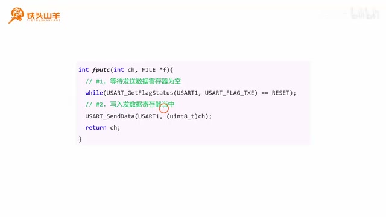
重写 fputc 时等待 TXE 并发送字符的代码 · 原片 11:10
可以把逻辑概括为固定的两步，但实际代码仍逐条写清：循环查询 USART1 的发送标志，条件为标志仍是 RESET 时继续等待；当 USART_FLAG_TXE 变为 SET，说明发送数据寄存器空了，退出循环。随后把字符写入发送数据寄存器。由于 ch 是 int 而 USART_SendData 要的是字节值，调用时转换成 uint8_t。最后 return ch；讲解中说明这是固定形式，无需在这里深究返回值的意义。
实际发送前必须先等标志位，避免发送数据寄存器还没空就覆盖内容；寄存器空出后才写入当前 ch。函数声明中的第二个 FILE *f 参数保留在接口里，发送逻辑使用的是第一个参数。
在工程中实现并检查 fputc¶
把函数写在文件底部。函数名必须是 fputc，不能写错，否则不会生效；第一个参数是 int ch，第二个参数是 FILE *f。如果 FILE 报未知类型，就在文件顶部引用 stdio.h，错误就会消失。
函数体里做两件事：第一，用 while 循环调用 USART_GetFlagStatus 查询 USART1 的 TXE 标志，直到它等于 SET 后退出；第二，把 ch 转为字节类型，再用 USART_SendData 发出去；最后 return ch。
现在简单测试。接线和上节课相同，这里不再介绍；把 USB 转 TTL 模块和调试器都插到电脑上，打开串口调试助手，设置串口号、波特率 115200、无校验、8 位数据位、1 位停止位、无硬件流控，然后打开串口。接收格式选 ASCII，也就是按字符接收数据。
回到代码，删除之前的测试程序，改用 printf 打印 hello world 并加上换行回车。编译时按左上角第二个按钮；显示没有错误、没有警告，就表示编译成功。再按下载按钮把程序下载到单片机，按复位键运行。
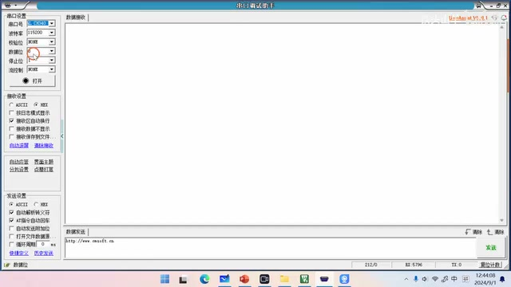
串口调试助手显示的串口通信参数与 ASCII 接收选项 · 原片 13:50
验证串口打印结果¶
复位后，串口调试助手里出现 hello world。前面的问号是 0xFF，这是单片机启动时输出的内容，不用管它。再按一次复位，又出现一行 hello world，后面跟着换行回车。这说明格式化字符串打印已经成功。
接下来做一个有趣的实验：通过 printf 把单片机当前时间格式化显示出来。目标格式是时、分、秒、毫秒；时分秒之间用冒号，秒和毫秒之间用点号。
获取当前时间可以用 GetTick。这是课程提供的方法，在 delay.h 头文件里，不是标准库函数，但可以直接使用。调用它得到单片机启动后的当前时间：刚启动时为 0，随着运行增长，单位是毫秒。把结果存入 currentTick，再通过几行计算得到毫秒、秒、分和小时。
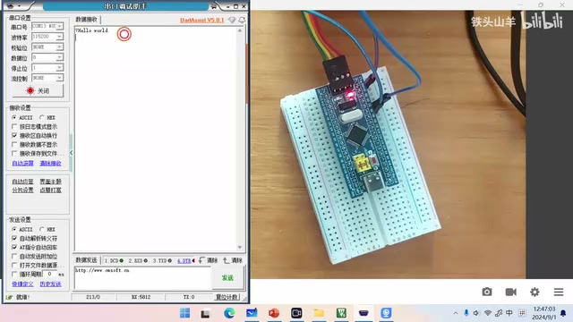
串口调试助手接收到 hello world · 原片 14:42
测试时第一次复位会在 hello world 前出现一个问号，这是启动时输出的 0xFF，讲解中说可以忽略；再次复位后仍能看到一行 hello world，结尾有换行回车，因此可以确认输出成功。
新实验要用 printf 把时间显示在屏幕上，目标形式为“时:分:秒.毫秒”。取得时间的 GetTick 由课程提供，定义在 delay.h，不是 C 标准库接口。调用前引用头文件并按后文说明初始化 delay。它返回从单片机启动开始累计的毫秒数，刚启动时为零，此后逐渐增加；保存到 currentTick 后，再拆成毫秒、秒、分钟和小时。
将毫秒计数换算成时分秒¶
用一个数值例子看这些计算。假设 GetTick 得到的 currentTick 是 29,430,125 毫秒，对应的时间是 08:10:30.125。毫秒部分是 currentTick % 1000，余数为 125。
接着让 currentTick 除以 1000，再把结果赋回 currentTick。这是整数相除，小数会被省略，所以 29,430,125 变成 29,430 秒。秒数用 currentTick % 60 得到，29,430 对 60 取余是 30；再让 currentTick 除以 60，整数结果为 490，余数部分被省略。
分钟用 490 对 60 取余，结果是 10；再把 currentTick 除以 60，得到整数 8，作为小时。这样依次通过取余和整除，就得到毫秒 125、秒 30、分 10、时 8。
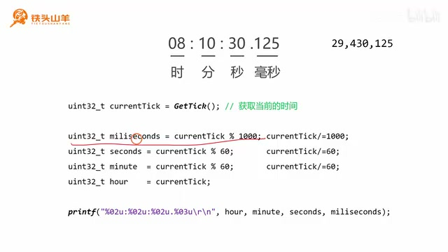
GetTick 毫秒值与时分秒毫秒换算示意 · 原片 16:45
例子中的显示格式是 08:10:30.125，计数为 29,430,125。先取模 1000 得 125 毫秒，再整除 1000 得到 29,430 秒，整数除法丢掉小数。接着 29,430 对 60 取余得到 30 秒，整除 60 得 490 分钟；490 对 60 取余得到 10 分钟，再整除 60 得 8 小时。每次除法都把新值放回 currentTick，因此后续步骤基于已经缩小单位后的计数继续计算。
编写时间计算代码¶
现在编写这段程序。先注释掉之前的 printf 测试。因为要用 GetTick，先引用 delay.h；使用这个头文件前，要先初始化 delay，最好把初始化调用放在函数顶部。
在 while 循环里调用 GetTick 获取系统当前时间，赋给一个无符号 32 位整型变量，例如 currentTick。毫秒用 currentTick % 1000 计算；算完后让 currentTick 除以 1000，再计算秒：对 60 取余；然后 currentTick 再除以 60。接下来用同样的方式计算分钟：对 60 取余，因为一小时有 60 分钟；然后再除以 60。最后小时就是 currentTick 本身。这样毫秒、秒、分钟和小时都算出来了。
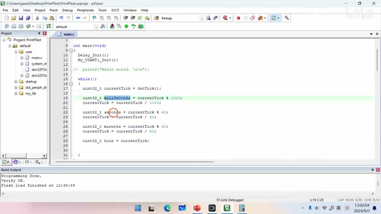
循环中获取 GetTick 并完成毫秒、秒、分钟和小时换算的代码 · 原片 20:58
程序先把旧的 printf 测试调用注释掉，再引用 delay.h 并初始化 delay。进入循环后读取一次 GetTick，存成 uint32_t currentTick。计算毫秒时先取模 1000，然后把计数除以 1000；之后秒和分钟各自通过对 60 取余取得，并在取余后继续除以 60；最后剩余的整数就是小时。每个中间值按先取出当前单位、再缩小计数单位的顺序更新，和前面的 29,430,125 示例相同。
格式化时间并控制输出频率¶
各个值算好后，用 printf 打印时间字符串。格式是时:分:秒.毫秒。时、分、秒都按两位整数显示，不足两位时前面补零，因此占位符用 %02u；u 表示无符号整数，也可以写 %d。这三个值之间用冒号分隔。毫秒占三位，不足三位前面补零，因此使用 %03u，并在秒与毫秒之间加点号。末尾加 换行回车。
按小时、分钟、秒、毫秒的顺序把变量传给 printf：格式串依次是 %02u:%02u:%02u.%03u ，对应 hour、minute、seconds、milliseconds。由于 while 循环会很快反复执行，不希望打印得太快，所以加一个 Delay，让它每 100 毫秒打印一次。
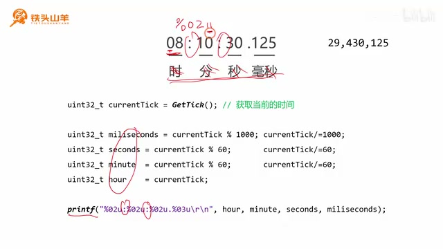
时分秒使用 %02u、毫秒使用 %03u 的格式串 · 原片 21:30
时、分、秒分别占两位，格式标记为 %02u：02 表示宽度为两位并在前面补零，u 表示无符号整数；讲解中也提到可以写 %d。三个时间单位之间放冒号。毫秒占三位，用 %03u，秒后以点号分隔。最后附上回车换行 \r\n。传入参数的顺序必须与格式串一致，即小时、分钟、秒、毫秒。循环本身会快速执行，所以用 delay 降低输出频率，让串口每 100 ms 打印一次。
下载程序并观察计时¶
编译代码，左上角第二个按钮是编译按钮。编译后没有错误也没有警告，说明代码正确。再按下载按钮把代码写入单片机，观察运行效果并按下复位按钮，屏幕就开始显示时间。
时间从 00:00:00.000 开始增长，每过一秒秒数增加 1，后面显示毫秒，这个实验就成功了。以上是本期视频的全部内容，感谢收看，我是铁头山羊，我们下期视频再见。
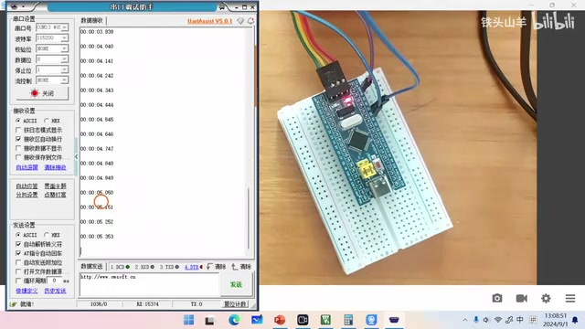
串口调试助手显示持续递增的时间值 · 原片 23:12
编译按钮是左上角第二个按钮；检查没有错误且没有警告后，再按下载按钮将程序写入单片机。按板上的复位按钮启动程序，就能看到时间开始显示。观察它从零附近往上增长，每经过一秒秒数加一，末尾则是毫秒数。由此确认时间计算、格式化和串口输出都工作了。